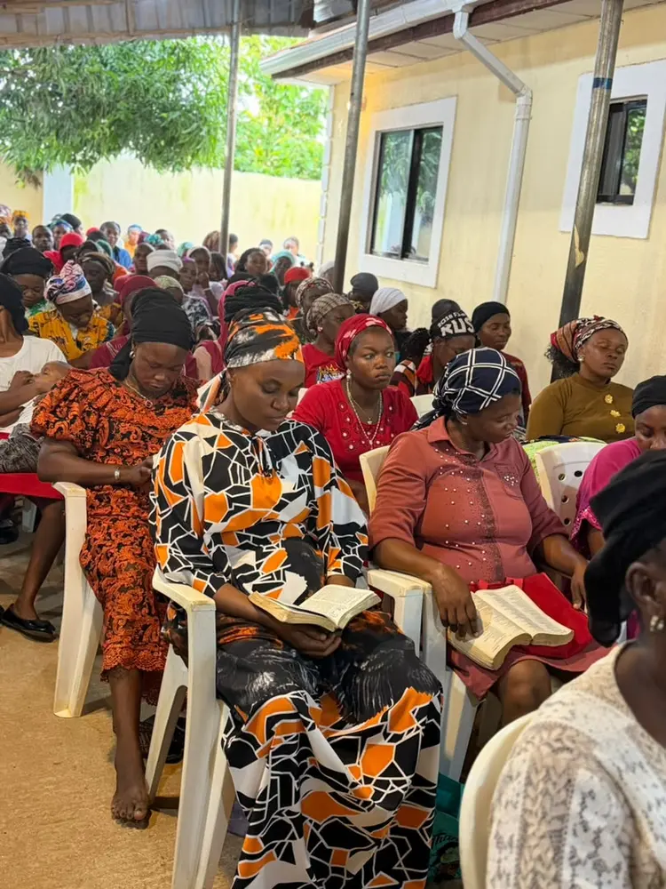
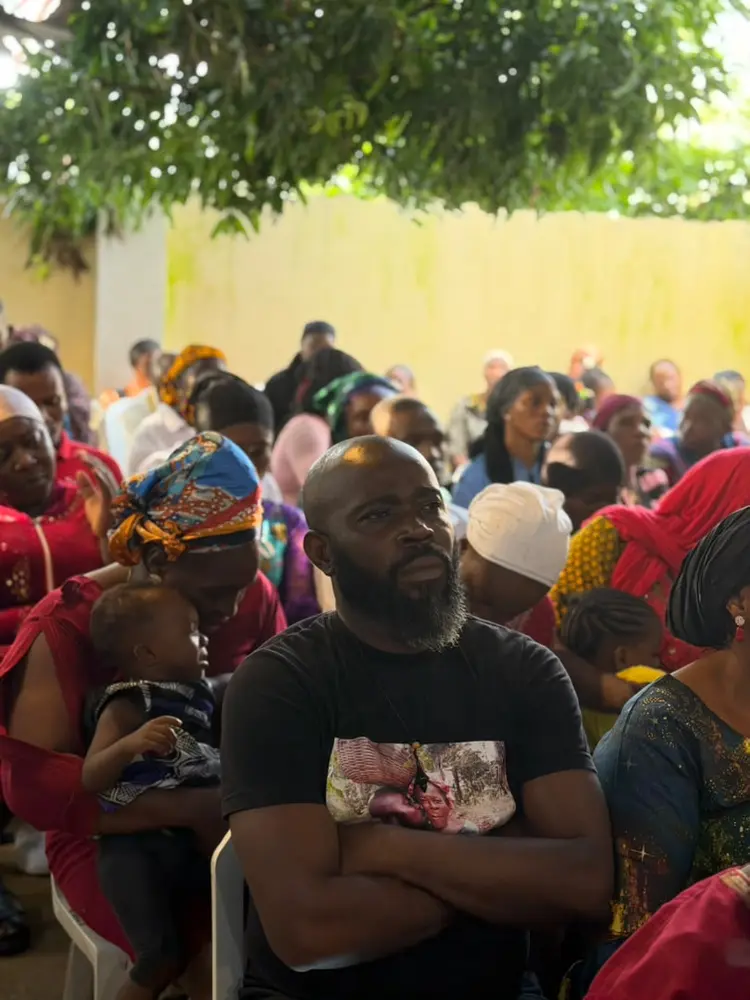
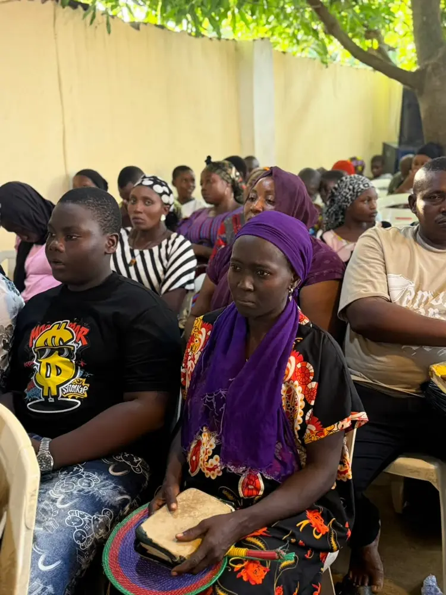
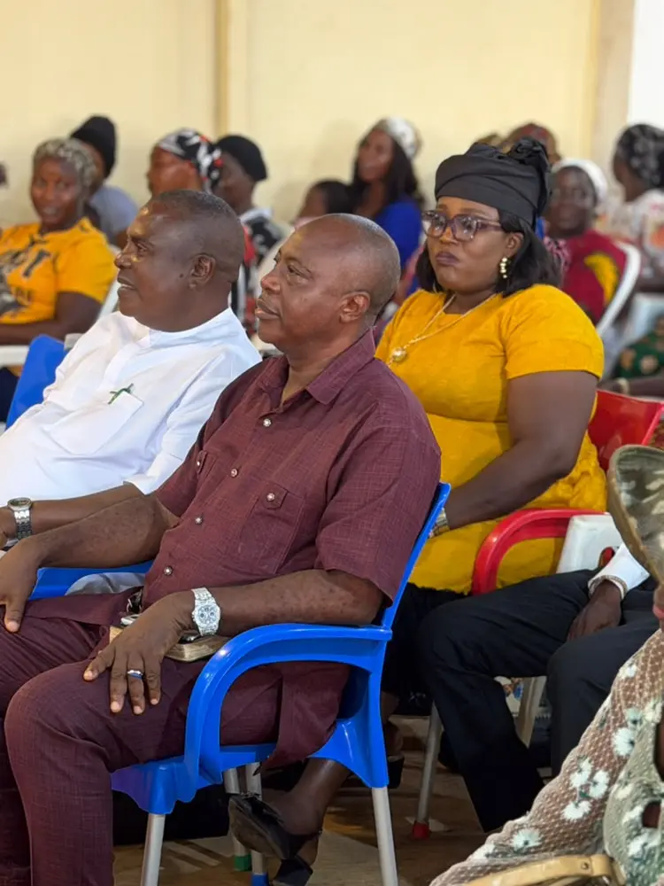
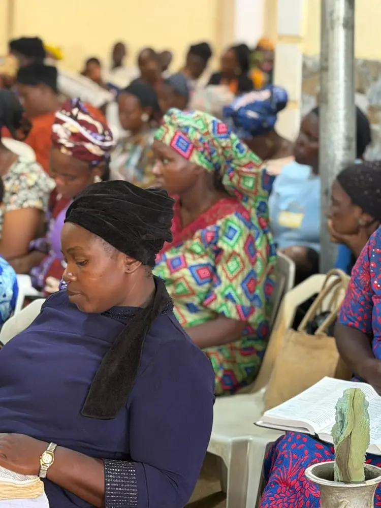

Growing in the Word
Worship together
We gather around Scripture, prayer and fellowship.
Welcome home
A place to belong. A people becoming like Christ.



We are a growing family of believers committed to knowing Jesus, living His Word and sharing His love with our community.
Whatever your story or season, you are welcome here. Come as you are and discover a place to worship, grow, serve and belong.
Discover our story →Meet the leaders who faithfully teach God’s Word, care for families and help our ministry grow in purpose.
“I am the bread of life. Whoever comes to me will never go hungry.”
John 6:35“Where the Spirit of the Lord is, there is freedom.”
2 Corinthians 3:17“We walk by faith, not by sight.”
2 Corinthians 5:7Life is better together. Find connection, purpose and spiritual growth in one of our ministry families.
A caring community where every generation can grow in Christ.
Learn more →Helping a generation grow bold in faith and purpose.
Learn more →
03Meaningful fellowship, discipleship and support for every season.
Learn more →Serving our neighbours and sharing Christ beyond our walls.
Learn more →Visiting a new church can feel like a big step. We’ll make it simple—from directions and parking to helping your children settle in.
God is writing beautiful stories in our community. There is room for your story too.
I found more than a church—I found people who prayed with me, stood beside my family and helped me grow in faith.
Your generosity helps us share the Gospel, care for families and serve our community. Add your giving provider link here when ready.
Give BountifullySend a prayer request, ask a question or tell us you’re planning a visit. Our team would love to hear from you.
VisitBehind LEA Primary School, Kurudu, Abuja 900109, Federal Capital Territory, Nigeria
Contact0706 308 3665
hello@breadoflifedcm.org